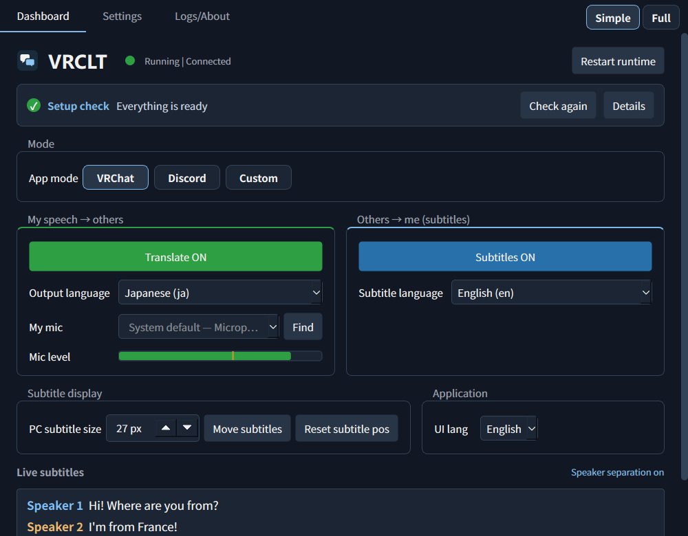
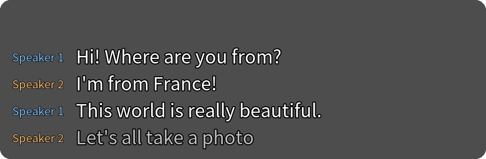
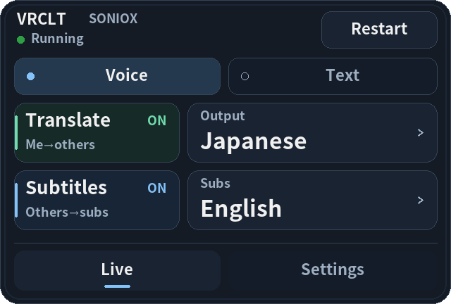
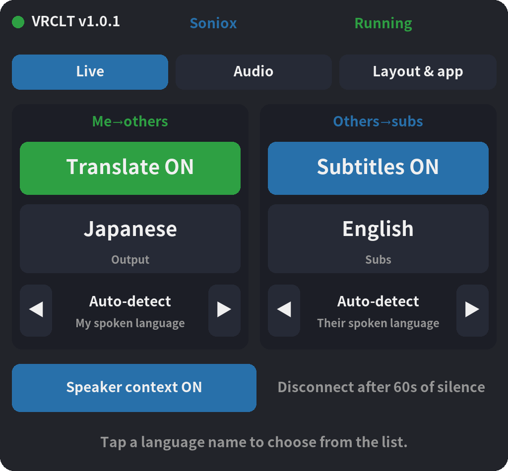

Translate what you say.
Speak into your microphone to send translated audio to VRChat or Discord. Choose the language you want others to hear.
VOICE TRANSLATION / LIVE SUBTITLES
v1.0 Released
VRCLT is a Windows app that translates your speech for VRChat and Discord and displays translated subtitles for what others say.
Windows · Your own API key · VB-Cable for voice output

Speak into your microphone to send translated audio to VRChat or Discord. Choose the language you want others to hear.
Read what other people say in your chosen language, in the app, on your desktop, or inside SteamVR.
Switch languages from the wrist menu. Use the SteamVR Dashboard for settings, or send translations to the VRChat chatbox.
Version 1.0 is available. Download the Windows executable and read the release notes on GitHub.
View releasesInterface / Desktop & VR
View the desktop dashboard, translated subtitles, wrist menu and SteamVR settings.



v1.0 app screens rendered with sample conversations; headset behavior is not demonstrated here.
Setup / Windows
Download the Windows executable from GitHub Releases and run it. Python is not needed for the packaged app.
Open downloadsChoose a translation engine, create a key with its provider, and enter it in Settings. Provider usage is billed separately.
See the enginesInstall VB-Cable. Send the translated voice to CABLE Input and select CABLE Output as the microphone in your target app.
VB-CableTranslation engines
Gemini Live, Qwen LiveTranslate, OpenAI Realtime or Soniox. Language coverage, voices and costs depend on the provider and model.
Compare setup optionsThe app is open source under the MIT license. Translation uses your own provider API key, and that provider may charge for usage. Check its rates and balance before starting.
No. You can use voice translation and desktop subtitles on Windows without a headset. SteamVR is needed for the VR overlays and wrist menu.
The app sends audio to the translation provider you select. Your API key and settings are saved locally on your PC. Read the selected provider's data policies before use.
Yes. The Windows executable for v1.0 is available on GitHub. It includes setup checks, automatic audio configuration and a Simple view. The download buttons open the latest public release.
Download the latest Windows release and read the release notes on GitHub.